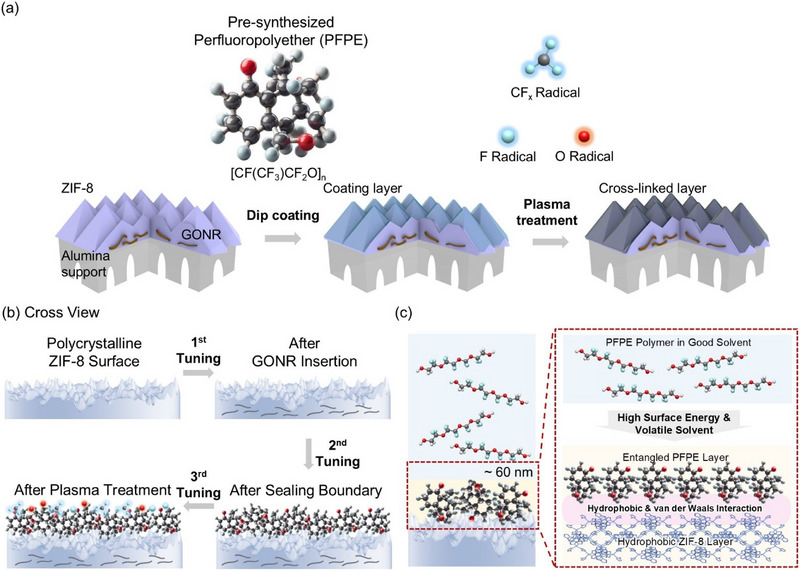

Research context and placement
This industrial gas-membrane study addresses structural confinement and sealing. Without bioelectronic joining or host-response evidence, it is provisionally shelved only as interface-manufacturing foundations.
Boundary case: assigned to the closest interface for navigation. Read the rationale and cross-links together; the primary theme does not delimit the study. Placement of foundational work does not establish direct bioelectronic application.
Research overview and key contributions
GNR confinement and PFPE sealing control nonselective pathways in ZIF-8 membranes.
Confinement, sealing and surface fluorination provide distinct controls over gas-pair selectivity.

Overview of ZIF gas-separation membrane design using GONR layers, PFPE sealing and plasma treatment; not evidence of biological performance.
Eunji Choi, Seungho Yu, Taehwan Kim et al.. “Gas‐Specific and Tunable Hydrogen‐Selective ZIF Membrane through Combined Physical Confinement and Sealing Techniques”. Figure 1. DOI: 10.1002/smll.202501590. CC BY-NC-ND 4.0. Public original image copied byte-for-byte, with no resizing, cropping, annotations or re-encoding.
Source figure and caption ↗ · DOI: 10.1002/smll.202501590 ↗ · CC BY-NC-ND 4.0 ↗
Noncommercial academic use with attribution and the license link; keep the original figure unchanged. Cropping, translation overlays and annotations are not included.
Open challenges
Editorial question: Does the selectivity–permeance balance persist under mixed gases, humidity, pressure and extended operation?
Comparison context
Separate pure-gas and mixture tests; match gas pair, pressure, temperature, thickness and support.
Related external research
A MOF Glass Membrane for Gas Separation
The external abstract reports eliminating intercrystalline-defect formation by vitrifying ZIF-62; #84 confines and seals a crystalline membrane.
Framework, phase, support and gas pairs differ; separation factors alone do not establish superiority.
Abstract checkedCorresponding-author verification
Jungmok Seo: not a corresponding authorThis record concerns Jungmok Seo’s correspondence designation. Author order or an asterisk alone is not treated as confirmation; this check is separate from verification of the research content.
- Correspondence evidence source ↗
Dae Woo Kim → _fncrsp93pmc__; Corresponding author.
front/article-meta/contrib-group and author-notes; name-to-corresp reference and email · public_repository_xml_read
- Main-text review scope
- Wiley abstract, introduction and structural-design explanations were read. This is gas-separation research, not a bioelectronic validation.
- Supplementary review scope
- Supplementary-information content was not read in this batch. No completed review beyond the previously stated scope is claimed.
- Pending verification
- Verify separation conditions, stability and simulation assumptions for DOI 10.1002/smll.202501590 in school Chrome. Retain only a foundational biointerface connection.
COVERAGE & OUTREACH
Coverage and outreach
Links are checked for their relationship to this paper. Media publication does not establish independent reporting or additional experimental validation.
링크솔루텍, 자사 코팅소재 활용 연구 SCI(E)급 국제학술지 Small 게재… “의료기기 코팅 기술, 산업용 가스분리막 적용 가능성 검증” ↗
The body gives Choi E.’s exact title, Small article 2501590 and the ZIF-8 sealing method matching #84; Seo and Lee are identified as coauthors.
Body read Read the company PRESS RELEASE and displayed date. This is a corporate statement from a company led by participating coauthors, not independent reporting.
Sources and verification scope
Wiley abstract, introduction and structural-design explanations were read. This is gas-separation research, not a bioelectronic validation.
- Public publication baseline ↗ · #84 · 2026-10-03
- Crossref metadata ↗: Only public bibliographic metadata registered with Crossref was checked. This does not mean that the publisher page, abstract, or full text was read; full-text verification in the school Chrome session remains pending. license_urls lists registered links and does not establish permission to redistribute text or figures. It may include TDM or posting-policy links.
- Gas-Specific and Tunable Hydrogen-Selective ZIF Membrane through Combined Physical Confinement and Sealing Techniques ↗
public_publisher_selected_full_text · Abstract; Introduction; discussion of GNR confinement, PFPE sealing and plasma fluorination; no Supporting Information audit; 2026-10-03 - A MOF Glass Membrane for Gas Separation ↗
public_external_abstract · Abstract and DOI metadata; read 2026-10-03.